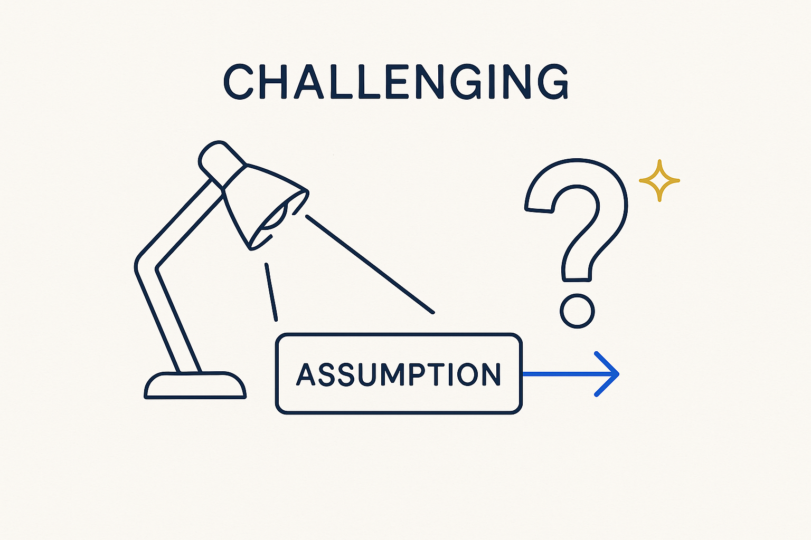

Positive, constructive challenging — put every assumption back under the light and ask the hard question the comfortable answer lets you avoid, to break a stuck field out of its impasse.

> Positive, constructive challenging — put every assumption back under the light and ask the hard question the comfortable answer lets you avoid, to break a stuck field out of its impasse.
Challenging is the first move in the arc: impasse → challenging → breakthrough → momentum. It is the deliberate act of putting every assumption back under the light — the tool, the model, the process, the meeting — and asking the hard question the comfortable answer lets you avoid. Nothing changes in a stuck field until someone is willing to challenge what everyone quietly agreed to stop questioning.
The important word is positive. This is not cynicism or contrarianism for its own sake. It is challenging aimed at forward motion: question the way we model, the way we spend, the way we meet — not to win an argument, but to open a door. Done right it energizes rather than deflates; people leave a challenging session with a sharper question and more momentum, not a bruise. And it turns inward as much as outward — challenge your own assumptions first, or the challenge to others isn’t credible.
A challenging workshop is where this lives: bring the impasse into the room, question it out loud, and turn a stuck conversation into directed forward energy. A challenge without a next step is just noise; a challenge that lands opens the breakthrough.
Where it lives: the signature principle of Breakthrough Modeling — the spark that starts the arc.